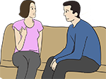

Module: Tips for families and caregivers
Laura Dyas LBSW, LPC, MA
When people have a chronic disease such as scleroderma, there may come a point in time, when they want or start to need help managing their disease, dealing with insurance companies, arranging schedules and doctor appointments, doing activities, or being transported from place to place. Today may be the day you just learned that you are now a caregiver for your loved one or friend with scleroderma. This could be a new role for you, or maybe one you have taken on before. If you are a person with scleroderma you may want to read this to learn more about your family member or care giver’s role.
No matter how you got where you are, being a caregiver can come with many feelings.
As a caregiver you will go through many phases, especially as you first begin to take on more responsibility and provide more care for your loved one.
Most care givers have not had formal training and may feel they are not adequate in their roles. The many responsibilities of being a caregiver can present challenges that are difficult and overwhelming.
The good news is you CAN do this. We have created this module to provide you with some tips and tools to assist you. Your role may not be the easiest one you have taken on in your lifetime, but it can be the most rewarding and fulfilling.
The goals of caregiving are for you and your loved one to remain safe and secure in your environment, and to locate the resources that will make caregiving as positive of an experience as possible.
The information in this module is provided as an informational resource only, and is not to be used or relied on for any diagnostic or treatment purposes. Please consult your health care provider, or contact a licensed therapist, if you have any specific questions regarding your feelings or concerns about your loved one, or if you think you are having trouble coping.